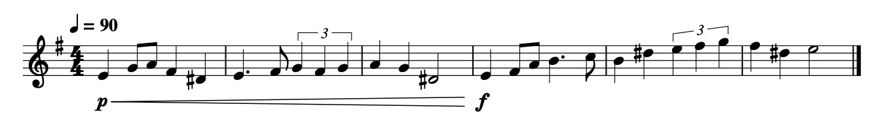
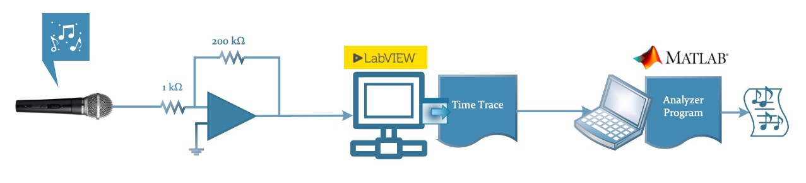
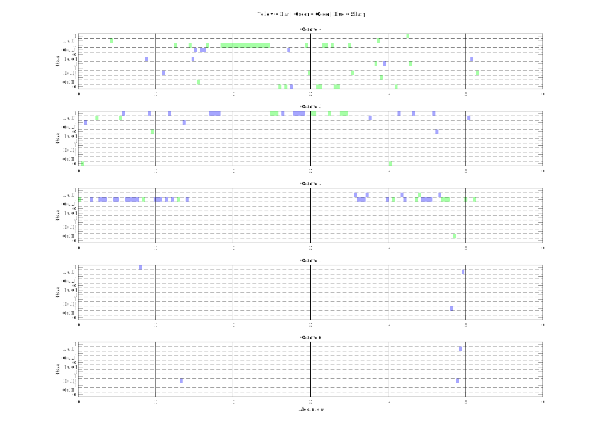
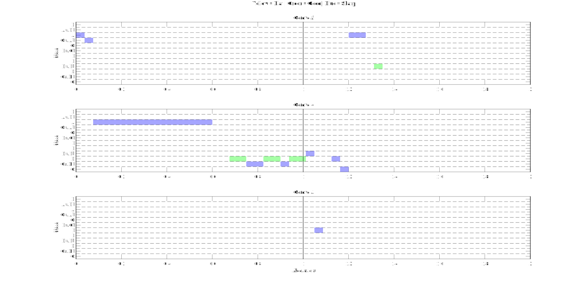
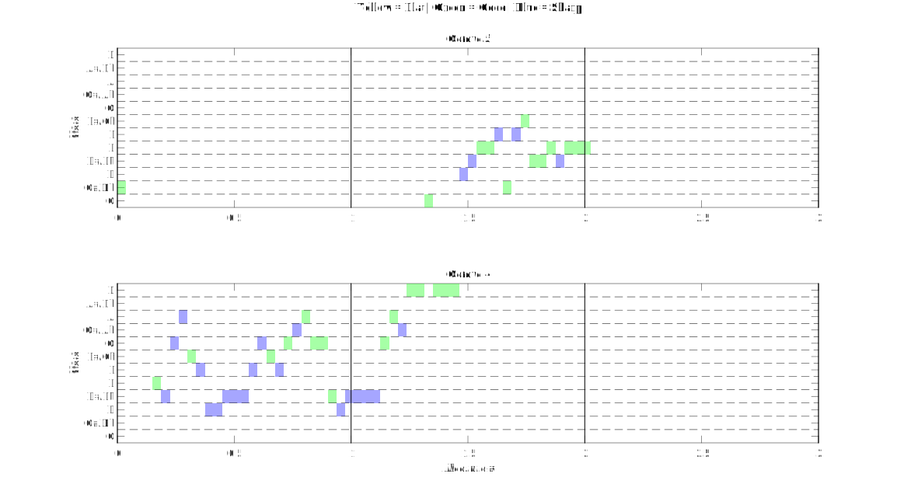
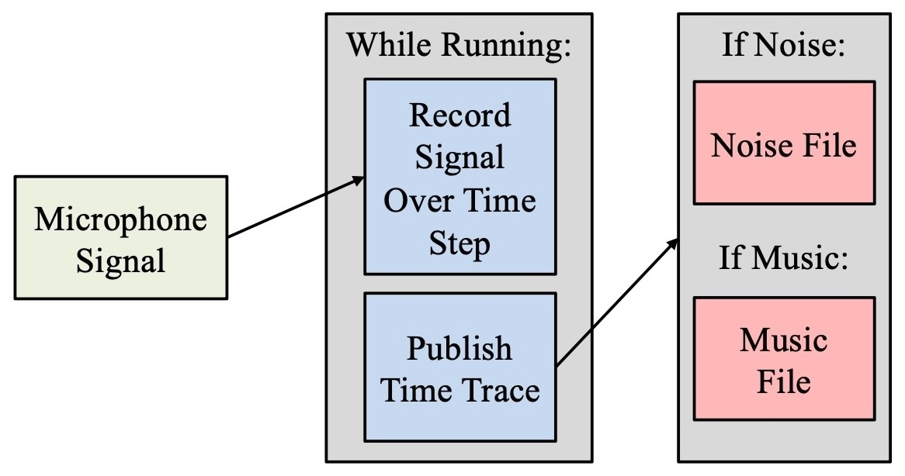
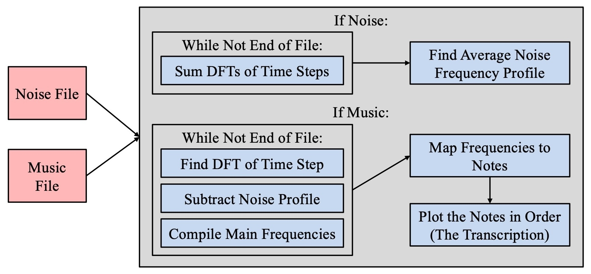
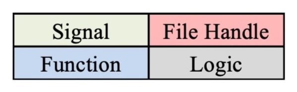

Create a tool to improve the efficiency of a musician's practice sessions by providing comprehensive and instantaneous feedback on the played piece's tempo and pitch, regardless of the instrument used.
A class in Spring 2023 required us to form groups and come up with a project that uses the skills learned from the experiments we conducted throughout that semester (and the previous semester).
Given my time in orchestra from elementary through high school, I knew how notes in typical 12-tone music relate to each other. Before I could write any code, I came up with a short excerpt that would be used for the experiment. Afterwards, I made a sample script in MATLAB that had the excerpt manually entered in order to develop the analyzer portion for when we run the experiment in the lab (we had only a couple hours in the lab to get data, so any prior preparation would help). The sheet music for the excerpt, along with the analyzer output, is shown below:
Although we all had experience with LabVIEW from previous experiments, my two teammates worked on the LabVIEW portion that would be responsible for obtaining the time trace data from the microphone circuit we would make in the lab, and planning the microphone circuit so we could make it quickly in the lab. Our planned data flow was as follows:
When we entered the lab, we were able to set everything up quickly. However, when we attempted to run the system, we got the following output when I played only the tuning A (the A in Octave 4, or "A4"):
We realized that either the microphone was noisy or the lab itself was too loud. In order to get data within the remaining time in lab, we had to resort to the MATLAB recorder script I wrote to test out the analyzer for time trace data (in preparation for the lab). When we tested that script on my laptop with A4 then D4, we got the following output (the modified data flow will be shown below, too):
Even though there was still some noise, the laptop's microphone fared much better than the circuit. Thus, we used it to collect data for the rest of the time we had. Our best run of the excerpt is shown below:
We noticed afterwards that the actual output we got looked like a condensed version of the ideal output that my sample script generated in the beginning. When I further experimented with the recorder script, I realized that the time between recorded time steps was not trivial, so a fraction of the excerpt was successfully recorded. The logic shown below for the recorder script shows how the recorder is run only during the time step, stopped, then started back up again. We did not consider that stopping and starting the recorder would take a non-trivial amount of time.
| Recorder Logic |
|---|
|  |
| Analyzer Logic |
|  |
| Legend |
|  |